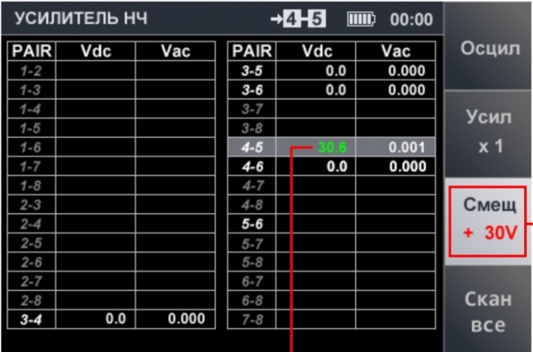

")
New ST-500 Piranha

PACKAGE EQUIPMENT:
| ST-031M PIRANHA
1. UHF sensor
2. Conductive wire lines differential device
3. Battery element 4. Attenuator 5. Sound emitting device 6. USB cable for sound source ( for speaker) 7. Induction converter 8. Main unit 9. Nozzle adapter (crocodiles) 10. Adapter of scanning receiver and low frequency amplifiers BWLC031M 11. Cable for connection BWLC031M to telephone lines 12. Universal cable for connecting BWLC031M to wired lines 13. High-frequency telescopic antenna 14. Cable for connecting BWLC031M to power outlets 15. USB flash drive 16. USB cable for connection to PC 17. Adapter for connecting BWLC031M to multicore cables 18. Telephone adapters 19. Cables with Type Connectors RJ45: (8x4; 8x6; 8x8) 20. Headphones 21. Charger 22. Technical Passport (not shown in picture) 23. Transportation case (not shown in picture)
|
ST-500 Piranha
1. Main unit |
The ST-500 Piranha kit does not include an induction sensor (magnetic sensor), its functions are performed by the combined search device ST-600, which is purchased separately. The ST-500 kit does not include a connecting cable for connecting to open parts of 220v lines.
| Selective RF Detector | ST-031M Piranha | ST-500 Piranha |
| Operating frequency range, MHz | 140-4420 | 20-6000 |
| Bandwidth, MHz | 1-40 | 1-20 |
| Input impedance, Ohm | 50 | 50 |
| Scanning speed, GHz / s | 18 | 40 |
| Dynamic range, dB | 50 | 50 |
| Wired receiver | ||
| Operating frequency range, MHz | 0,05-140 | 0,1-180 |
| Maximum line voltage, V | 300 AC, DC | 50(AC), 60(DC) |
|
Continuous operation time at max power consumption, hours |
>7 | >4 |
| Charge time of a fully discharged battery, hours | 7 | 7 |
| Weight and measurements: | ||
| Dimensions of the main unit (length, width, height), mm | 175X83X36 | 165X100X40 |
| Weight of main unit, kg | 0,435 | 0,47 |
Channels for detecting wireless listening devices:
SELECTIVE HF DETECTOR is designed to detect analog and digital (using GSM, LTE, Bluetooth, WiFi standards) radio transmitting listening devices in the frequency range 20 - 6000 MHz.
Since the frequency range is expanded, there is no need to use UHF detector, as in ST-031M.

IR Detector Designed to detect IR transmitters (listening devices that use the infrared frequency range to transmit information).
ST-031M doesn’t have IR detector.
Channels for detecting wire line listening devices:
WIRED RECEIVER designed to detect high-frequency signals of listening devices transmitting information using power and low-current wire lines in the frequency range 100 kHz - 180 MHz.
The 220V adapter is designed as a “plug”.
Low-voltage lines are connected to the main unit via the built-in switch. The switch is similar to the switch used in the ST-300 Spider.
LOW FREQUENCY AMPLIFIER is designed to detect low-frequency signals of listening devices.

Work with PC
From the USB (from the kit), the driver for connecting the ST-500 Piranha is installed. PC software for working with ST-500 is not installed on the PC, but is launched from a flash drive. PC software allows you to save data to various objects, cities and countries on your PC and load data into ST-500 Piranha memory.

In Conclusion
ST-500 Piranha retained all the positive qualities of ST-031M.
1. User friendly interface.
2. Advantage of all line “PIRANHA” is that users of ST-031 and ST-031M will easily understand how to use ST-500 Piranha.
3. Mobility.
4. Balanced functionality.
ST-500 eliminated predecessor’s disadvantages and took a step forward in checking wired communications.